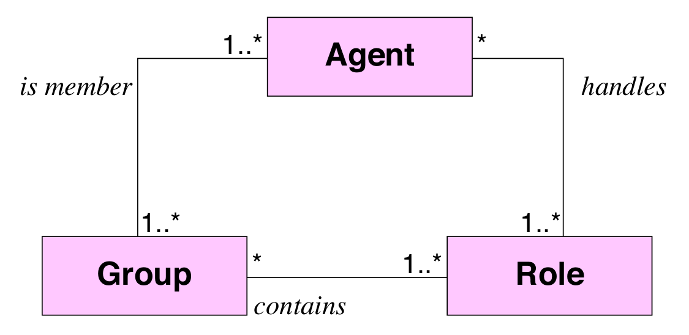

Pricipalement deux approches :
Récap
Un rôle est caractèrisé par :
Quelques méthodes d'admission à un groupe :
Ayant un ensemble de villes et la distance qui les sépare deux à deux.
On veut trouver le plus court chemin passant par toutes les villes.
Solution naïve : tester tout les chemins possibles.
Solution plus intelligente (heuristique) : ACO (Ant Colony Optimization).